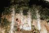

5 Motivi per Sposarsi in Salento nel 2025
Il Salento non è solo una destinazione — è un'emozione. Scoprite perché sempre più coppie italiane e straniere scelgono questa terra meravigliosa per il giorno più importante della loro vita.
- 01.Paesaggi unici: mare cristallino e campagna profumata
- 02.Cucina straordinaria con prodotti tipici DOP
- 03.Atmosfera magica e irripetibile
- 04.Location esclusive con storia e charme
- 05.Ospitalità autentica del Sud Italia